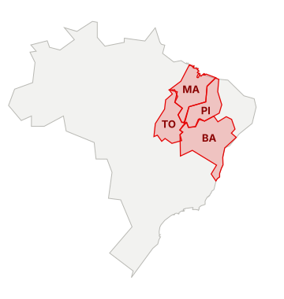
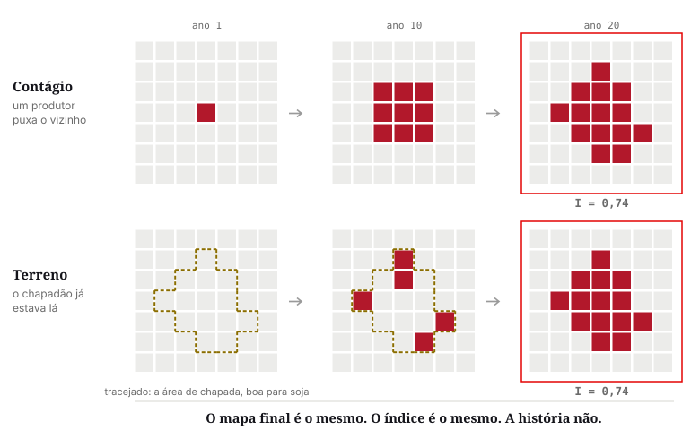
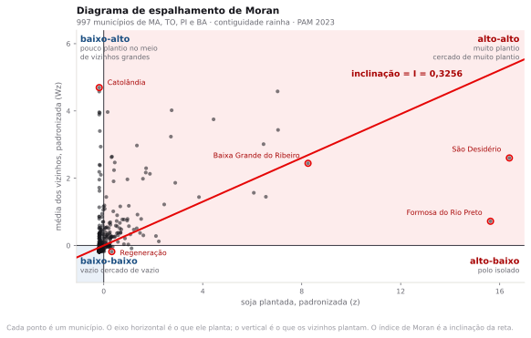
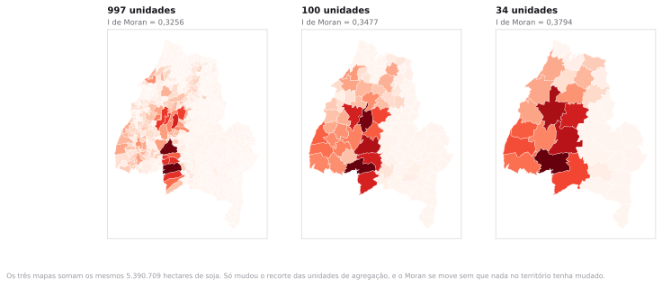

Preparação e dados
Antes de tudo: que lugar é esse
MATOPIBA é a junção das siglas de quatro estados: MAranhão, TOcantins, PIauí e BAhia. Não é região do IBGE nem unidade administrativa. É um recorte criado pelo Decreto 8.447, de 2015, para orientar política agrícola federal numa faixa específica de cerrado.

A região é conhecida como a última fronteira agrícola do cerrado. Até os anos 1980 era pecuária extensiva e cerrado nativo; o solo é ácido e pobre, e a lavoura só se tornou viável com correção por calcário e cultivares adaptadas ao clima quente. A partir dos anos 1990 a soja avançou sobre os chapadões, primeiro no oeste da Bahia, depois no sul do Maranhão, no sudoeste do Piauí e no leste do Tocantins.
Hoje são 5.390.709 hectares de soja plantada nos 997 municípios, concentrados de um jeito bem desigual: 763 deles plantam zero, e um só, São Desidério, na Bahia, planta 493.639 hectares. Essa desigualdade é o assunto da aula.
A soja do MATOPIBA forma uma mancha visível no mapa, e a mancha tem duas explicações concorrentes. Pode ser contágio entre vizinhos, com armazém, revenda de insumo e informação se espalhando de um município para o do lado. Ou pode ser apenas o chapadão: solo profundo e relevo plano ocorrendo juntos no mesmo pedaço de território, sem ninguém influenciar ninguém.
As duas produzem mapas parecidos e pedem respostas de política pública opostas. Medir a mancha é o que você aprende hoje; separar as duas causas é o que a aula vai mostrar que não dá para fazer só com um índice.
- matopiba_soja.gpkg Os 997 municípios de MA, TO, PI e BA, polígono, EPSG:4674, comoficial
CD_MUN,NM_MUN,SIGLA_UF,AREA_KM2,soja_ha— a área plantada de soja em 2023 — eid_mun, o código do IBGE em número inteiro, que o GeoDa usa como identificador da matriz de pesos. É o único arquivo da aula.
CD_MUN. O índice de Moran e todas as somas desta página saem desse único arquivo. O LEIA-ME do pacote traz o filtro e a junção que o produziram, para quem quiser refazer. O recorte das quatro UFs e a junção com o SIDRA já vêm feitos: o LEIA-ME do pacote traz as duas operações, com fonte e data, para quem quiser refazer.Como é a tabela que você vai usar
É esta a tabela que você abre no passo 1. Uma linha por município, e a coluna soja_ha é a variável da aula inteira. Estas são as primeiras linhas, na ordem em que o QGIS abre, por código do IBGE:
| CD_MUN | NM_MUN | SIGLA_UF | AREA_KM2 | soja_ha |
|---|---|---|---|---|
| 1700251 | Abreulândia | TO | 1.906,3 | 12.207 |
| 1700301 | Aguiarnópolis | TO | 236,8 | 0 |
| 1700350 | Aliança do Tocantins | TO | 1.581,0 | 9.387 |
| 1700400 | Almas | TO | 4.007,2 | 13.227 |
| 1700707 | Alvorada | TO | 1.207,2 | 29.879 |
| 1701002 | Ananás | TO | 1.581,1 | 10 |
E estas são as cinco maiores áreas plantadas do recorte, que vão aparecer em todos os resultados da aula:
| CD_MUN | NM_MUN | SIGLA_UF | AREA_KM2 | soja_ha |
|---|---|---|---|---|
| 2928901 | São Desidério | BA | 15.156,7 | 493.639 |
| 2911105 | Formosa do Rio Preto | BA | 15.634,3 | 470.934 |
| 2201150 | Baixa Grande do Ribeiro | PI | 7.808,9 | 251.303 |
| 2909307 | Correntina | BA | 11.504,3 | 216.140 |
| 2903201 | Barreiras | BA | 8.051,3 | 215.226 |
Quatro colunas de identificação e uma de medida. Repare em CD_MUN: são sete dígitos de texto, não um número, e é essa coluna que liga a malha à tabela do SIDRA. Repare também em Aguiarnópolis, com zero: é a situação de três quartos do recorte, e ela domina quase tudo que vem depois.
A soja avançou sobre o cerrado do MATOPIBA em duas décadas. Olhando o mapa, os municípios com muita soja aparecem grudados uns nos outros. Isso é sinal de que um produtor puxou o outro, ou é só o chapadão sendo plano no mesmo lugar?
Análise espacial de áreas e dependência espacial
Na aula 1 você viu a primeira lei de Tobler: tudo se relaciona com tudo, mas coisas próximas se relacionam mais. Ela descreve o que se vê em quase todo mapa temático brasileiro. O que ela não diz é por quê, e existem duas razões possíveis que produzem manchas parecidas e exigem tratamentos opostos.
Dependência espacial
O que acontece num município depende do que aconteceu no vizinho. Existe alguma coisa passando de um para o outro: o armazém que serve um serve o do lado, o produtor copia o vizinho que deu certo, a estrada que atende um atende o outro.
É o caso de cima na Figura 2. Se o primeiro produtor não tivesse plantado, o segundo talvez nunca plantasse.
Heterogeneidade espacial
Os municípios estão em terrenos diferentes, e é o terreno que decide. Não passa nada de um para o outro: há chapadão de um lado e serra do outro, e quem está no chapadão planta porque o chapadão é plano, não porque o vizinho plantou.
É o caso de baixo na Figura 2. Tire qualquer produtor da história e os outros plantam do mesmo jeito.

O MATOPIBA é um caso de dependência ou de heterogeneidade?
Dos dois, e essa é a resposta honesta. A aptidão agrícola do chapadão é um regime: solo profundo, relevo plano, chuva concentrada. Isso é heterogeneidade e explica boa parte da mancha. Sobre esse regime opera um contágio real, feito de armazém, revenda de insumo, assistência técnica e informação entre produtores, que faz o município vizinho de um grande plantador começar a plantar. Separar as duas parcelas exige modelo de regressão espacial, que é assunto de pós-graduação. Nesta aula você aprende a detectar o padrão e a não confundir detecção com explicação.
A matriz de vizinhança
Para dizer que um valor depende do vizinho, é preciso primeiro dizer quem é vizinho. Isso vira uma matriz quadrada W, de tamanho n por n, em que a célula wij vale alguma coisa se j é vizinho de i e zero se não é. A diagonal é sempre zero: ninguém é vizinho de si mesmo.
Existem várias maneiras de preencher essa matriz, e elas não concordam entre si.
| Critério | Regra | Quando usar |
|---|---|---|
| Contiguidade rainha | Vizinho é quem compartilha aresta ou vértice | Padrão para malha municipal. É o que a maioria dos artigos usa sem dizer. |
| Contiguidade torre | Vizinho é quem compartilha aresta de comprimento maior que zero | Quando o contato de canto for irrelevante para o fenômeno. |
| k vizinhos mais próximos | Os k centroides mais próximos, sempre exatamente k | Quando há unidades isoladas ou tamanhos muito desiguais. |
| Banda de distância | Todo mundo a menos de d quilômetros do centroide | Quando o mecanismo tem alcance físico conhecido. |

Depois de decidir quem é vizinho, falta decidir o peso. A prática dominante é a padronização por linha: cada linha da matriz é dividida pela sua soma, de modo que os pesos de cada município somem 1. Um município com 12 vizinhos dá peso 1/12 a cada um; um com 2 vizinhos dá 1/2. O efeito é que a matriz passa a calcular médias em vez de somas, e nenhum município influencia mais que outro só por ter muita divisa.
Se a escolha de W muda o resultado, o resultado é sobre o território ou sobre a escolha?
Sobre os dois, e não há como separar. W não é um dado, é uma hipótese sobre como o fenômeno se propaga, escrita em forma de matriz. Escolher contiguidade rainha equivale a afirmar que o que importa é fazer divisa. Escolher k = 5 equivale a afirmar que todo município tem a mesma quantidade de vizinhos relevantes, o que é falso em qualquer malha real. O procedimento defensável é declarar W no relatório, junto com o motivo, e mostrar o resultado sob pelo menos duas escolhas. Você faz isso no exercício de hoje.
A média móvel espacial
Com W padronizada por linha, multiplicar a matriz pelo vetor de valores produz, para cada município, a média dos valores dos seus vizinhos. Esse novo vetor se chama defasagem espacial, ou spatial lag, e é a peça central de tudo o que vem depois.
lag(i) = soma de w(i,j) · x(j) -- com pesos somando 1, é a média dos vizinhos de i
É a mesma ideia da média móvel de uma série temporal, com uma diferença: no tempo, o passado é único e vem antes. No espaço não existe antes, e cada unidade tem vários vizinhos, todos simultâneos. Por isso a estatística espacial precisou de aparato próprio em vez de reaproveitar a de séries.
No QGIS não existe botão de matriz de pesos, e isso é uma vantagem pedagógica. Você vai construir a defasagem com uma junção espacial por resumo, que faz exatamente a conta acima, e vai ver o número aparecer coluna por coluna.
O índice de Moran
Patrick Moran propôs em 1950 um índice que mede se um valor alto tende a aparecer perto de outro valor alto. A forma que interessa aqui, com W padronizada por linha, é uma razão entre duas somas.
I = soma de (x(i) − x̄)·(lag(i) − x̄)
────────────────────────────────
soma de (x(i) − x̄)²
numerador : quanto o desvio de cada município acompanha o desvio dos vizinhos
denominador : a variação total da variável
resultado : uma correlação entre o que você tem e o que os seus vizinhos têm
O índice varia aproximadamente entre −1 e 1. Perto de 1, valores parecidos se agrupam. Perto de −1, valores opostos se alternam, como um tabuleiro de xadrez. Perto de zero, a distribuição no espaço é indiferente ao valor.
Essa conta é a que o GeoDa faz no passo 4, sobre a soja do MATOPIBA. O resultado é I = 0,3256, e é esse número que as próximas duas seções vão interrogar: primeiro se ele poderia ter saído por acaso, depois o que ele esconde.
Sob a hipótese de ausência de padrão, o valor esperado do índice é E[I] = −1/(n−1), e não zero. Com os 997 municípios desta aula, E[I] = −0,001004. A diferença é irrelevante para n grande e deixa de ser para n pequeno: com 20 unidades, E[I] = −0,053, e um índice de −0,05 significa exatamente nada.
Inferência por permutação
Ter o número não basta. 0,3256 é muito ou é pouco? Sem uma régua, não dá para dizer: talvez qualquer distribuição de soja por 997 municípios produza algo parecido, e o que parece padrão seja só o jeito como os números caíram.
A régua tradicional seria uma tabela estatística, que exige supor que o dado segue uma curva normal. A área plantada de soja não segue: três quartos dos municípios estão em zero e um deles planta quase meio milhão de hectares. A saída é construir a régua com os próprios dados, embaralhando.
O procedimento é direto. Mantenha a geometria e a matriz W paradas. Sorteie uma nova atribuição dos 997 valores de soja aos 997 municípios, ao acaso. Calcule I. Repita 999 vezes. Você obtém uma distribuição de referência construída com os seus próprios dados, sem hipótese sobre a forma da distribuição.
Vale ver isso acontecendo. Na animação abaixo o exemplo é menor, 25 unidades em vez de 997, para caber na tela, mas o procedimento é exatamente o mesmo.

Imagine recortar os 997 números de soja, jogar todos num saco, sacudir e devolver um para cada município ao acaso. O território não mudou, a lista de vizinhos não mudou, a soma de soja não mudou. A única coisa que mudou foi quem ficou com qual número.
Se depois do embaralhamento o índice continuasse alto, o agrupamento que você vê no mapa seria uma coincidência que acontece sozinha. Como ele desaba para perto de zero em todos os 999 sorteios, a posição dos números no território não é indiferente: eles estavam arrumados.
É um teste que não supõe nada sobre a forma da distribuição dos dados, e é por isso que funciona aqui, com 763 municípios em zero e uma cauda enorme. Nenhum teste baseado em curva normal sobreviveria a um dado desses.

Pseudo p-valor
Proporção de permutações que produziram um índice tão extremo quanto o observado, com o próprio observado somado ao numerador e ao denominador: (R + 1) / (M + 1), em que R é o número de sorteios mais extremos e M o número de permutações. Com M = 999 e R = 0, o resultado é 1/1000 = 0,001. Não existe valor menor. Se você precisa de um p menor, precisa de mais permutações.
O que exatamente está sendo testado quando você embaralha os valores entre os municípios?
A hipótese nula é que a soja poderia estar em qualquer lugar: que o rótulo geográfico é irrelevante e que qualquer arranjo dos mesmos 997 números sobre os mesmos 997 municípios seria igualmente provável. Rejeitar essa hipótese diz que a localização importa. Não diz por que importa, não diz que vizinho influencia vizinho, e não exclui que a causa seja o solo. É um teste de padrão, não de mecanismo.
O diagrama de espalhamento de Moran
Luc Anselin propôs em 1996 uma leitura gráfica do índice que é mais informativa que o número. No eixo horizontal, o valor padronizado de cada município. No eixo vertical, a média padronizada dos seus vizinhos. Cada município vira um ponto, e a inclinação da reta ajustada é exatamente o índice de Moran.

Os quatro quadrantes têm nome e significado.
| Quadrante | Leitura | No MATOPIBA |
|---|---|---|
| Alto-alto | Valor alto cercado de valores altos | O núcleo do cinturão: oeste da Bahia, sul do Maranhão, sudoeste do Piauí. |
| Baixo-baixo | Valor baixo cercado de valores baixos | Três quartos do recorte: litoral e centro do Maranhão, semiárido e Recôncavo baianos, norte do Tocantins. |
| Alto-baixo | Ilha alta em região baixa | Uma frente nova, isolada da anterior. Vale investigar caso a caso. |
| Baixo-alto | Buraco baixo em região alta | Município pequeno, acidentado ou protegido, no meio do cinturão. |
LISA e o problema das múltiplas comparações
O índice global responde uma pergunta só: existe padrão. Não diz onde. Anselin resolveu isso decompondo o índice em uma parcela por unidade, e chamou o resultado de indicador local de associação espacial, LISA na sigla em inglês.
Cada município ganha o seu próprio I local, o seu quadrante e o seu pseudo p-valor, calculado por permutação condicional: os valores dos outros 996 municípios são embaralhados, o do município em questão fica parado, e se mede quantas vezes o I local sorteado supera o observado.
Fazer 997 testes de hipótese ao nível de 5% deveria produzir cerca de 50 resultados significativos por puro acaso. Nesta aula, 635 municípios passam do corte de p ≤ 0,05, muito acima do esperado, mas ainda assim a lista contém falsos positivos. A correção de Bonferroni pediria p ≤ 0,05/997 = 0,00005, e aí aparece o segundo problema: com 999 permutações o menor pseudo p possível é 0,001, vinte vezes maior que o limiar. Nenhum município sobreviveria, e não porque o padrão seja fraco, mas porque faltam permutações. Para ter chance seriam necessárias pelo menos 19.939.
Na prática, o mapa LISA é usado como ferramenta exploratória, não como bateria de testes confirmatórios. A leitura correta é: aqui há indício de agrupamento, vá olhar. A leitura incorreta é tratar cada município significativo como uma descoberta estatística independente.
Se o mapa LISA é exploratório, por que ele aparece como resultado principal em tantos artigos?
Porque produz uma figura convincente e um relato fácil. O mapa com quatro cores e uma mancha vermelha parece um achado, e a legenda com p < 0,05 empresta autoridade. Vale exigir três coisas de qualquer trabalho que apresente um LISA: qual matriz W foi usada, quantas permutações, e se houve alguma correção para múltiplas comparações. Ausência das três é comum e é motivo suficiente para desconfiar do resultado.
Processo real ou artefato da unidade de agregação
Falta o problema mais desconfortável, e ele vem da aula 4. O índice de Moran é calculado sobre unidades administrativas que ninguém desenhou pensando em soja. Município é uma unidade política, de tamanho arbitrário, criada por lei estadual em datas diferentes. Se a unidade muda, o índice muda.

Há um segundo efeito, do mesmo tipo. A área plantada em hectares depende do tamanho do município: um município grande tende a ter mais soja simplesmente por ser grande. Trocando os hectares pela fração da área municipal ocupada por soja, o índice desta aula sobe de 0,3256 para 0,4457. Os dois são positivos e significativos, e medem coisas diferentes: o primeiro fala de onde está a produção, o segundo de onde a paisagem virou lavoura. No topo do segundo está Luís Eduardo Magalhães, com 53,2% do município plantado.
Moran e LISA da soja no MATOPIBA
Seis passos no GeoDa. Nenhum deles tem conta para fazer na mão: o trabalho é escolher o que pedir e entender o que voltou.
Abrir os dados
- Abra o GeoDa. Ele sobe em duas janelas: a barra de ferramentas e a janela Connect to Data Source.
- Na aba File, clique no ícone de pasta, troque o tipo de arquivo para GeoPackage (*.gpkg) e escolha
matopiba_soja.gpkg. Arrastar o arquivo para a caixa Drop files here também funciona. - Clique em Open. O mapa dos 997 municípios aparece, sem cor nenhuma por enquanto.
- Clique no ícone Table na barra de ferramentas para abrir a tabela.
No rodapé da tabela: 997 registros. As colunas são CD_MUN, NM_MUN, SIGLA_UF, AREA_KM2, soja_ha e id_mun. A variável da aula inteira é soja_ha, a área plantada de soja em 2023, em hectares.
Clique no cabeçalho de soja_ha para ordenar. No topo está São Desidério, na Bahia, com 493.639 hectares. No fim, uma fileira longa de zeros: são 763 municípios que não plantam soja, três quartos do recorte.
Ver onde está a soja
Antes de medir, olhe. Um mapa coroplético responde em cinco segundos se vale a pena procurar padrão.
- Clique no ícone Map na barra de ferramentas e escolha Natural Breaks Map, com 5 categorias.
- Na janela Variable Settings, escolha
soja_hae clique em OK. - Clique na caixa de cor da categoria mais alta, na legenda. Os municípios dessa faixa acendem no mapa.
Uma faixa escura descendo pelo oeste da Bahia, sul do Maranhão e sudoeste do Piauí, com um prolongamento no leste do Tocantins. O resto do mapa é claro. Essa faixa é o cinturão da soja, e a pergunta da aula é se ela está agrupada por contágio ou por terreno.
Repare que selecionar na legenda acende os mesmos municípios na tabela. Tudo no GeoDa está ligado a tudo: selecionar num lugar seleciona em todos os outros. Essa é a diferença dele para o QGIS, e é o que torna a aula de hoje possível em 45 minutos.
Construir a matriz de vizinhança
É a decisão da aula: dizer quem é vizinho de quem. Tudo o que vem depois depende dela.
- Clique no ícone Weights Manager na barra de ferramentas, ou vá em Tools ▸ Weights Manager.
- Clique em Create.
- Em ID Variable, escolha
id_mun. Enquanto você não escolher, o resto da janela fica cinza. - Na aba Contiguity Weight, marque Queen contiguity e deixe Order of contiguity em 1.
- Clique em Create, salve como
matopiba_q.gale feche a janela de criação.
O GeoDa guarda a lista de vizinhos num arquivo separado, o .gal, e usa o ID para ligar cada linha dessa lista à linha certa da tabela. Ele trabalha melhor com identificador inteiro, e o CD_MUN do IBGE é texto. Por isso o arquivo da aula já traz id_mun, que é o mesmo código em número.
Com o arquivo selecionado na lista, o painel de propriedades mostra: tipo queen, 997 observações, mínimo de 1 vizinho, máximo de 14, média de 5,719, e 0,57% de células não nulas. Esse último número diz que a matriz é quase toda zero, e é por isso que ela cabe na memória.
São 2.851 pares de municípios vizinhos. O que tem 14 vizinhos é Oeiras, no Piauí. Nenhum município ficou sem vizinho: se algum tivesse zero, ele seria uma ilha e o índice não saberia o que fazer com ele.
- Ainda no Weights Manager, clique em Histogram, embaixo à esquerda. Aparece a distribuição do número de vizinhos.
- Clique na barra mais alta. Os municípios com aquele número de vizinhos acendem no mapa.
- Clique em Connectivity Map, no meio, e passe o mouse sobre um município qualquer: ele fica escuro e os vizinhos dele ficam brancos.
Passe o mouse sobre um município na divisa com Minas Gerais ou com o Pará, no Connectivity Map. Quantos vizinhos ele tem?
Menos do que deveria. O recorte por UF corta as ligações que atravessam a divisa, e esses municípios ficam com a média calculada sobre menos gente. É o efeito de borda, e ele está na moldura inteira do MATOPIBA. Guarde para o fechamento.
O índice de Moran e o diagrama
- Vá em Space ▸ Univariate Moran's I.
- Escolha a variável
soja_hae confirme que o campo Weights, embaixo, está commatopiba_q. Clique em OK.
No alto do gráfico: Moran's I = 0,3256. O eixo horizontal é a soja padronizada de cada município, o vertical é a média padronizada dos vizinhos dele, e cada ponto é um município. A reta que o GeoDa desenha tem inclinação igual ao índice — não é uma reta parecida com o índice, é o índice.
A nuvem fica grudada no canto inferior esquerdo, com uma cauda esticada para a direita. O ponto mais distante é São Desidério, a mais de dezesseis desvios da média.
As duas linhas tracejadas cruzam na média. Direita é quem planta acima da média, cima é quem tem vizinhos acima da média. Isso divide o gráfico em quatro quadrantes: alto-alto em cima à direita, baixo-baixo embaixo à esquerda, e os dois outliers espaciais nos cantos restantes.
O que o diagrama mostra e o mapa esconde: o índice global é uma média, e médias escondem. Os 0,3256 não vêm de 997 municípios levemente parecidos com os vizinhos. Vêm de uma nuvem enorme em cima do zero, que não informa quase nada, mais meia dúzia de pontos no extremo direito que puxam a reta sozinhos.
- Clique com o botão direito no gráfico e escolha Randomization ▸ 999 Permutations.
O histograma é a distribuição de referência: o índice de cada um dos 999 sorteios em que os valores de soja foram embaralhados entre os municípios. A linha vertical marca o observado.
No rodapé da janela: I = 0,3256, o esperado E[I] = −0,0010, que é −1/(997−1), a média e o desvio-padrão da distribuição de referência, e o valor z. No alto à esquerda, o número de permutações e o pseudo p-valor de 0,001 — o menor possível com 999 sorteios, e significa que nenhum deles chegou perto do observado.
Clique em Run algumas vezes. A distribuição muda um pouco e o observado continua fora dela. Isso é o teste.
No mesmo menu de botão direito há Use Specified Seed, marcado por padrão. É o que faz o resultado ser reproduzível: com a mesma semente, a mesma máquina devolve os mesmos sorteios. Em Specify Seed você vê e troca o valor.
Isso importa para o relatório. Um pseudo p-valor sem o número de permutações e sem a semente não é reproduzível, e é assim que a maioria dos artigos publica.
O mapa LISA
O índice global disse que existe padrão. Não disse onde. O LISA decompõe o índice numa parcela por município e responde isso.
- Vá em Space ▸ Univariate Local Moran's I.
- Escolha
soja_ha, confirmematopiba_qem Weights e clique em OK. - Abre uma janela com três caixas. Marque as três: Significance Map, Cluster Map e Moran Scatter Plot. Clique em OK.
- No Cluster Map, clique com o botão direito e escolha Randomization ▸ 999 Permutations, para usar o mesmo número de sorteios do passo 4.
O Significance Map mostra quão significativo é o agrupamento de cada município, em tons de verde: quanto mais escuro, menor o p. A legenda traz quantos municípios há em cada faixa.
O Cluster Map mostra que tipo de agrupamento, nas quatro categorias, com a contagem de cada uma na legenda. É o mapa que vai para o relatório.
O Moran Scatter Plot é o mesmo do passo 4, agora ligado aos dois mapas.
Na legenda do Cluster Map devem aparecer cerca de 35 alto-alto, 578 baixo-baixo, 21 baixo-alto e 1 alto-baixo, com o resto em não significativo. Municípios bem na borda do corte mudam de lado conforme a semente, então uma unidade de diferença aqui ou ali é esperada.
Selecione os pontos do extremo direito do diagrama, arrastando um retângulo em volta deles. O que acende nos dois mapas?
O oeste da Bahia. Os pontos que puxam a reta do índice são exatamente os municípios do núcleo do cinturão. Agora faça o contrário: clique na categoria alto-alto da legenda do Cluster Map e veja onde esses municípios caem no diagrama. Essa ida e volta entre gráfico e mapa é a ferramenta de análise desta aula.
O LISA faz um teste por município. Ao nível de 5%, 997 testes produziriam uns 50 significativos por puro acaso. O mapa é ferramenta exploratória, não bateria de testes confirmatórios: a leitura correta é aqui há indício de agrupamento, vá olhar, e não este município é uma descoberta estatística.
Salvar o resultado e ler os outliers
Os agrupamentos confirmam o que o mapa já mostrava. Os outliers é que dão trabalho, e por isso valem mais.
- Com o Cluster Map na frente e nada selecionado, vá em Options ▸ Save Results.
- Marque as três:
LISA_I, o índice local,LISA_CL, a categoria, eLISA_P, o pseudo p-valor. Clique em OK. - Abra a tabela e role até o fim: as três colunas novas estão lá.
- Clique com o botão direito no cabeçalho de
LISA_CLe escolha Selection Tool. - Em Selection Variable escolha
LISA_CL, ponha o intervalo3 <= LISA_CL <= 4e clique em Select All in Range. São as categorias baixo-alto e alto-baixo, os outliers espaciais. - Feche a ferramenta, clique com o botão direito num cabeçalho qualquer e escolha Move Selected to Top.
São 22 municípios: 21 baixo-alto e um único alto-baixo, Regeneração, no médio Parnaíba piauiense. Ela planta 15.103 hectares e os seis municípios que fazem divisa com ela plantam zero.
Repare que oito dos 21 baixo-alto plantam exatamente zero, entre eles Catolândia, cercada por São Desidério e Barreiras. O que os torna atípicos não é plantarem pouco: é estarem cercados de quem planta muito.
Um único alto-baixo em 997, e ele é a pergunta certa.
Ou Regeneração é o começo de uma frente nova, com a lavoura saltando do cerrado do sudoeste para o vale do Parnaíba, ou é um caso isolado que não se sustenta. Nenhum índice responde isso. O que o LISA fez foi apontar onde vale gastar o tempo do pesquisador; a resposta exige série histórica e informação de campo que não estão nesta tabela.
Exercício
Refaça o índice de Moran trocando a contiguidade rainha por k = 5 vizinhos mais próximos. São quatro cliques, e a pergunta é o que muda.
- Abra o Weights Manager e clique em Create.
- ID Variable:
id_mun. Vá para a aba Distance Weight. - Marque K-Nearest neighbors e ponha 5 em Number of neighbors.
- Clique em Create e salve como
matopiba_k5.gwt. - Rode Space ▸ Univariate Moran's I de novo com
soja_ha, agora escolhendomatopiba_k5em Weights. - Rode a permutação com 999 sorteios, como no passo 4.
Depois responda, em três frases:
- O índice subiu ou desceu em relação a 0,3256? De quanto, em pontos e em porcentagem?
- Por que mudou? Compare o histograma de conectividade das duas matrizes: pela rainha o número de vizinhos varia de 1 a 14, e por k = 5 todo município tem exatamente cinco. Quem ganhou vizinhos e quem perdeu?
- A conclusão da aula muda? Escreva a frase que você poria num relatório sobre o quanto o resultado depende da matriz escolhida.
Com k = 5 o índice sobe para cerca de 0,357, uns 0,031 ponto a mais, 9,7% acima. O pseudo p continua 0,001. O motivo está na contagem de vizinhos: pela rainha, 505 municípios tinham mais de cinco vizinhos e 251 tinham menos. Impor cinco a todos corta ligações nos municípios muito recortados e cria ligações onde a malha é esparsa. Das 2.851 ligações da rainha, 2.262 sobrevivem em k = 5, que tem cerca de 3.005 no total: as duas matrizes concordam em 79% das ligações.
A conclusão não muda, e é isso que vai no relatório: o padrão resiste a duas definições bem diferentes de vizinhança, com variação de menos de dez por cento. Resistência à troca de premissa não se supõe, se demonstra — e a demonstração cabe numa tabela de duas linhas que quase nenhum artigo publica.
Fechamento
Depende, e dá para medir o quanto. O índice de Moran da soja no MATOPIBA é 0,3256, com pseudo p de 0,001, e 35 municípios alto-alto concentram 66,9% da área plantada em 14,0% do território.
O que o número não diz é por quê. Ele mede que o padrão existe, não que o vizinho causou o vizinho. Separar o contágio entre produtores da aptidão comum do chapadão exige modelo, dado de solo e série temporal. Nesta aula você aprendeu a detectar, a testar e a desconfiar, nessa ordem.
- Detecção não é explicação. O índice diz que há padrão e cala sobre a causa. Regressão espacial, que separa o efeito do vizinho do efeito das variáveis locais, fica para além deste curso.
- O recorte por UF cria efeito de borda, e ele não foi medido. Um município do sudoeste baiano que faz divisa com Minas Gerais perde os vizinhos mineiros, e a média dele sai calculada sobre menos gente. Para saber o tamanho disso seria preciso refazer a conta com uma orla dos estados vizinhos e comparar, e este roteiro não faz isso.
- Com 763 dos 997 municípios em zero hectare, a variável é mais parecida com uma máscara do que com uma medida contínua. Isso empurra a média para 5.406,93 hectares, muito acima da mediana, que é zero, e faz com que "baixo" no diagrama de espalhamento signifique, quase sempre, exatamente zero.
- Todos os testes usaram 999 permutações e semente fixa. Rodar com outra semente muda pseudo p-valores próximos do corte, e portanto muda a lista de municípios significativos nas bordas.
- A variável é área plantada de um ano. Dependência espacial em dado de estoque e em dado de fluxo são coisas diferentes, e a expansão do MATOPIBA é um processo de vinte anos que uma safra não captura.
O mesmo cálculo no QGIS
O QGIS não tem autocorrelação espacial no núcleo. Dá para montar a conta na mão, e quem quiser ver de onde sai cada pedaço do índice encontra aqui o caminho completo. Não é necessário para a aula nem para a prova.
Fazer o cálculo à mão mostra uma coisa que a interface do GeoDa esconde: a defasagem espacial é literalmente a média dos vizinhos, e o índice é literalmente uma divisão entre duas somas. Quem for escrever um trabalho com Moran ganha em entender isso.
Em compensação leva três vezes mais tempo, e o QGIS não faz permutação nenhuma — o teste de significância teria que vir pronto de fora. Por isso a aula é no GeoDa e isto ficou como leitura.
Abrir os dados e olhar a tabela
O arquivo da aula já chega pronto: os 997 municípios das quatro UFs, com a área plantada de soja de cada um na coluna soja_ha. O tempo de hoje é do índice de Moran, então o recorte e a junção vieram feitos.
- Projeto novo, salvo em
InfoGeo/tema06_dependencia/projeto.qgz. - Arraste
matopiba_soja.gpkgpara dentro da janela. - Em Properties, aba Information, confirme o CRS
EPSG:4674 — SIRGAS 2000. - Abra a tabela com
F6, clique no cabeçalho desoja_hapara ordenar e percorra os extremos: o topo e o fim da lista. - Abra View ▸ Panels ▸ Statistics, escolha a camada e o campo
soja_ha.
997 feições: 417 na Bahia, 224 no Piauí, 217 no Maranhão e 139 no Tocantins. No painel Statistics, com o campo soja_ha: soma 5.390.709 hectares, média 5.406,93, mediana zero, máximo 493.639 em São Desidério. 763 municípios têm zero, três quartos do recorte.
Guarde a média e a mediana. Uma média quase mil vezes maior que a mediana avisa, antes de qualquer conta, que a distribuição é muito torta — e isso vai aparecer de novo no diagrama do passo 4.
Construir a matriz de contiguidade rainha
O QGIS não tem um objeto chamado matriz de pesos. Tem uma ferramenta que faz exatamente o que a matriz padronizada por linha faz: calcular a média dos vizinhos.
- Rode
native:joinbylocationsummary, que aparece como Join attributes by location (summary).
- Input layer
- matopiba_soja
- Join layer
- matopiba_soja (a mesma camada)
- Geometric predicate
- touch (só este)
- Fields to summarise
- soja_ha
- Summaries to calculate
- count, mean
- Discard records which could not be joined
- desmarcado
- Joined layer
- dados_tratados/matopiba_lag.gpkg
- A camada de saída ganha dois campos novos:
soja_ha_count, que é o número de vizinhos, esoja_ha_mean, que é a defasagem espacial. - No painel Statistics, veja a média e o máximo de
soja_ha_count.
Média de 5,719 vizinhos por município, mínimo 1, máximo 14, em Oeiras, no Piauí. Nenhum município com zero. São 2.851 pares de vizinhos, o que preenche 0,574% das 994.009 células da matriz: W é quase toda zero, e é por isso que ela cabe na memória. Se aparecer algum município com zero vizinhos, é ilha: o Moran não sabe o que fazer com ele e o resultado sai enviesado.
A padronização por linha estava embutida
Pedir a média dos vizinhos é a mesma coisa que montar a matriz de contiguidade, dividir cada linha pela sua soma e multiplicar pelo vetor de valores. O predicado touch implementa a contiguidade rainha: é verdadeiro quando as fronteiras se tocam e os interiores não se cruzam, o que cobre aresta e vértice, e é falso para o próprio município. Em malha municipal brasileira o contato de vértice puro é raro, então a contiguidade torre devolve quase a mesma lista; a diferença entre as duas costuma ficar na terceira casa do índice.
Calcular o índice de Moran global
Com a defasagem na tabela, o índice é uma divisão entre duas somas. Vamos montar as duas colunas.
- Abra o Field Calculator em
matopiba_lage criedxdlag, decimal com precisão 4:
("soja_ha" - mean("soja_ha")) * ("soja_ha_mean" - mean("soja_ha"))
- Crie
dx2, também decimal:
("soja_ha" - mean("soja_ha")) ^ 2
- Leia as duas somas no painel Statistics. Elas são grandes e podem aparecer em notação científica.
- Para não depender da leitura no painel, crie um terceiro campo,
moran, decimal com precisão 6:
sum("dxdlag") / sum("dx2") -- o mesmo valor em todas as 997 linhas
Soma de dxdlag: 288.020.977.646. Soma de dx2: 884.527.748.445. A razão é I = 0,325621, repetida em todas as linhas do campo moran. O campo moran guarda o mesmo número em todas as linhas, e é assim mesmo: o índice global é um só para o conjunto inteiro.
A fórmula mais vista nos livros usa valores padronizados, dividindo pelo desvio-padrão. Ela dá o mesmo resultado, e traz um risco: o painel de estatísticas do QGIS e a função stdev() das expressões podem usar o denominador n ou n−1 dependendo do contexto, e a diferença aparece na terceira casa. A razão entre as duas somas dispensa essa escolha.
Os quatro quadrantes
Sem permutação nenhuma, dá para classificar cada município pelo par de sinais. É o diagrama de espalhamento traduzido em mapa.
- Em
matopiba_lag, abra o Field Calculator e crie o campoquadrante, tipo texto, comprimento 12:
CASE
WHEN "soja_ha" >= mean("soja_ha") AND "soja_ha_mean" >= mean("soja_ha") THEN 'Alto-Alto'
WHEN "soja_ha" < mean("soja_ha") AND "soja_ha_mean" < mean("soja_ha") THEN 'Baixo-Baixo'
WHEN "soja_ha" >= mean("soja_ha") AND "soja_ha_mean" < mean("soja_ha") THEN 'Alto-Baixo'
ELSE 'Baixo-Alto'
END
- Em Properties, aba Symbology, escolha Categorized, campo
quadrante, e clique em Classify. - Use vermelho escuro para alto-alto, azul escuro para baixo-baixo, vermelho claro para alto-baixo e azul claro para baixo-alto. Guarde essas quatro cores: elas voltam nos passos 5 e 6, e manter a mesma convenção nos três é o que deixa comparar um com o outro.
- Grave a camada como
dados_tratados/matopiba_quad.gpkgcom botão direito ▸ Export ▸ Save Features As. É sobre ela que os passos 5 e 6 trabalham.
794 municípios em baixo-baixo, 101 em alto-alto, 87 em baixo-alto e 15 em alto-baixo. Soma 997. Ainda não há teste nenhum aqui: são só quatro combinações de sinal em torno de uma média de 5.406,93 hectares que 763 municípios não alcançam porque plantam zero.